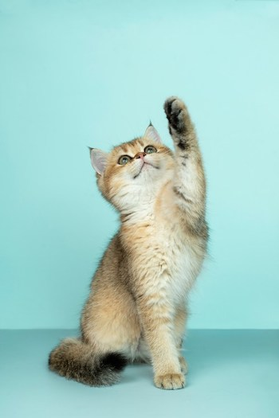
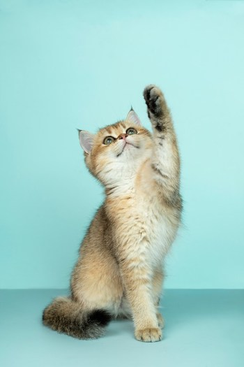

Cats are the coolest pet. Cats are independent and don't need as much attention as dogs. Cats are quiet and don't bark and make noiselike dogs do. They are much easier to take care of than a dog.
Photo by Alvan Nee on Unsplash
Cats are the coolest pet. Cats are independent and don't need as much attention as dogs. Cats are quiet and don't bark and make noiselike dogs do. They are much easier to take care of than a dog.
